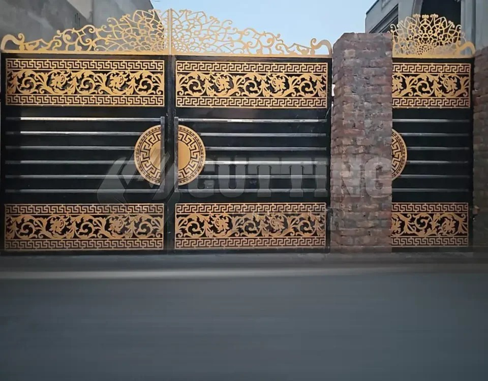

Technical expertise, skilled workmanship and modern fabrication practices form the foundation of Barake Industries.

Our company specializes in precision sheet metal fabrication, delivering reliable and high-quality metal components for industrial and commercial applications.
Our team consists of experienced fabricators, technicians and engineers who understand the importance of precision and consistency in metal manufacturing.
By combining traditional fabrication knowledge with modern machinery, we work to ensure every product meets required specifications and performance standards.
We work with mild steel, stainless steel, aluminium and other industrial sheet materials. Our fabrication processes include cutting, bending, forming, welding and finishing.
Engineering-focused fabrication based on project requirements and specifications.
Experienced fabrication practices focused on accuracy, consistency and finish.
Organized production and quality checks help maintain dependable output.